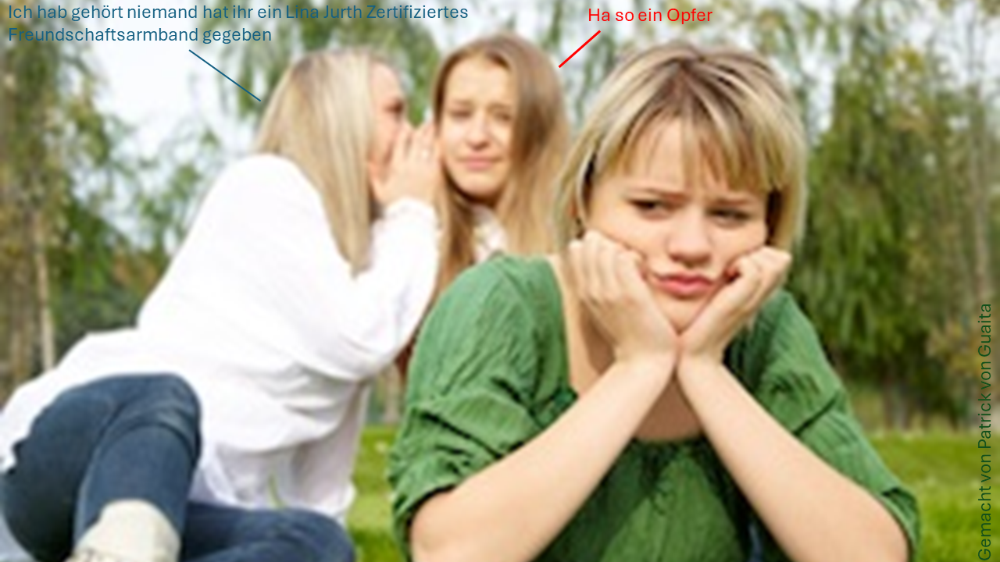

Bunte Fäden, einfache Knoten – und trotzdem steckt in Freundschaftsbändern oft viel mehr, als man auf den ersten Blick sieht. Sie sind nicht nur ein schönes Accessoire, sondern ein echtes Zeichen von Zusammenhalt, Vertrauen und Erinnerungen.
Das Besondere daran: Man kauft sie nicht einfach – Man macht sie selbst. Das macht jedes Band einzigartig, genau wie die Freundschaft selbst.
Man braucht:
• Pappkreis mit 9 cm Durchmesser
• Schere
• 7 Fäden (z.B. Stickgarn/Wolle) jeweils 50 cm lang
Anleitung:
1. Schneide in den Pappkreis 8 Schnitte mit einer Länge von ca. 2 cm und mache in die Mitte der Scheibe ein Loch.
2. Knote alle Fäden zusammen und ziehe sie durch das Loch.
3. Halte die Scheibe so, dass der Knoten nach unten zeigt und stecke die Fäden in die Schlitze.
4. Drehe die Scheibe so, dass der freie Schlitz nach oben zeigt.
5. Nimm vom freien Schlitz aus gesehen den dritten Faden von links und stecke ihn in den freien Schlitz.
6. Drehe die Scheibe wieder so, dass der freie Schlitz nach oben zeigt. Wiederhole Schritt 5 und 6 bis dein Band die passende Länge erreicht hat.
Autor: Lina Jurth
